Research, first author연구, 제1저자/2026
TMADTemporal Multi-Agent Distillation for Bimanual Long-Horizon Manipulation
A teacher policy learns two-arm, long-horizon tasks in simulation with object states it reads from the simulator. TMAD distills it into a student that sees two RGB images and the joint states, and only the student runs on the real robot, with no additional training there.Teacher policy는 Simulation에서 Simulator가 주는 물체 상태로 양팔 Long-horizon 작업을 학습. TMAD는 이를 영상 두 장과 관절 값만 보는 Student로 Distillation하고, 실제 로봇에서는 실물 추가 학습 없이 Student만 실행
TMAD student on Pick-and-Place, in Isaac Lab (left) and on the real robot (right).Pick-and-Place의 TMAD student, Isaac Lab(왼쪽)과 실물(오른쪽)
01
Problem문제
In simulation a policy can read object position and pose straight from the simulator. A real robot cannot: it has to estimate them from cameras, usually with a 6D pose estimator, and the estimation error and latency go straight into the policy.Simulation에서는 물체 위치와 자세를 Simulator가 직접 주지만, 실제 로봇에서는 카메라와 6D pose estimator로 추정해야 합니다. 이때 추정 오차와 지연이 Policy로 그대로 전달됩니다.
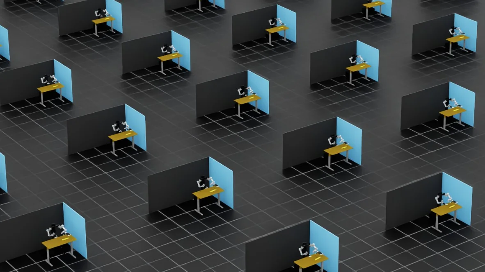
Simulation
Object state is given물체 상태가 주어짐
- The simulator gives object position and pose directly물체 위치와 자세를 Simulator가 직접 제공
- A policy can learn the task without visionVision 없이도 Policy 학습 가능
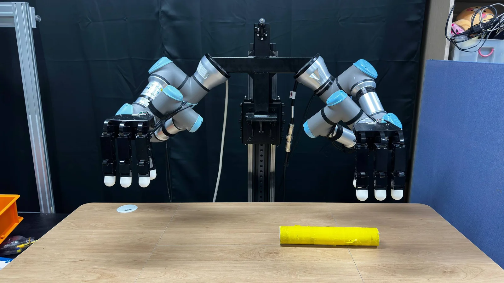
Real robot
Object state has to be estimated물체 상태를 추정해야 함
- Object pose estimated from cameras with a 6D pose estimator물체 자세를 카메라와 6D pose estimator로 추정
- Estimation error and latency pass into the policy추정 오차와 지연이 Policy로 전달
Approach제안
Use the teacher only for training. On the robot, run a student that sees two RGB images and the joint states.Teacher는 학습에만 쓰고, 실행은 영상 두 장과 관절 값만 보는 Student가 맡는다DextrAH-RGB distilled a state-based teacher into a stereo RGB student for one arm and a short grasping task. TMAD extends this to two arms and long-horizon tasks: the two arms are two agent tokens (multi-agent), and the student keeps a 32-step history (temporal).DextrAH-RGB는 상태 기반 Teacher를 Stereo RGB Student로 Distillation했지만 한 팔, 짧은 잡기 작업. TMAD는 이를 양팔 Long-horizon 작업으로 확장. 양팔을 두 Agent token으로 다루고(Multi-Agent), Student에 최근 32 step 이력(Temporal)을 더함
02
Two long-horizon tasks두 Long-horizon 작업
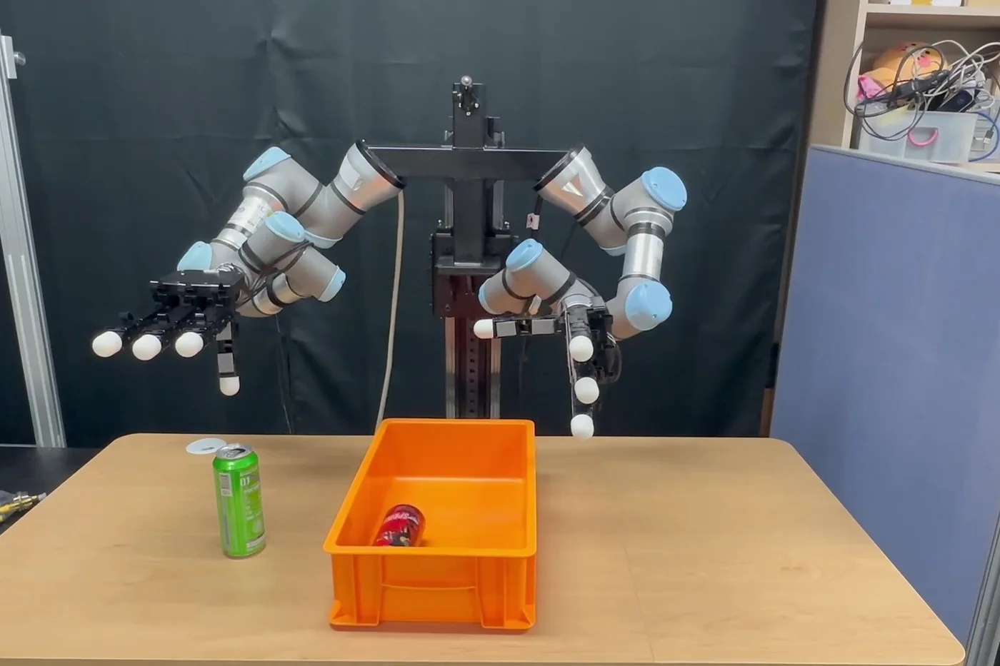
Task 1
Pick-and-Place
Each arm picks up a can and puts it in the bin in the middle.두 팔이 각각 캔을 집어 가운데 상자에 넣기
- Grasp L
- Place L
- Grasp R
- Place R
- Return
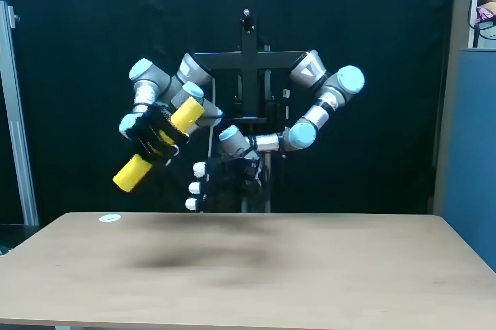
Task 2
Handover
One arm picks up a tube and passes it to the other arm, which places it.한 팔이 집은 튜브를 다른 팔에 넘겨 놓기
- Grasp
- Transfer pose
- Hand over
- Place
- Return
A trial counts as a success only if all five subgoals are completed.Subgoal 5개를 모두 마친 Trial만 성공
03
Approach방법
Teacher learns the taskTeacher가 작업 학습
- 500 parallel environments병렬 환경 500개
- Input: object pose, goal, joints입력: 물체 자세, 목표, 관절 값
- BC on 300 demos, then PPOBC 300 demos 뒤 PPO
πT(at | OT,t)
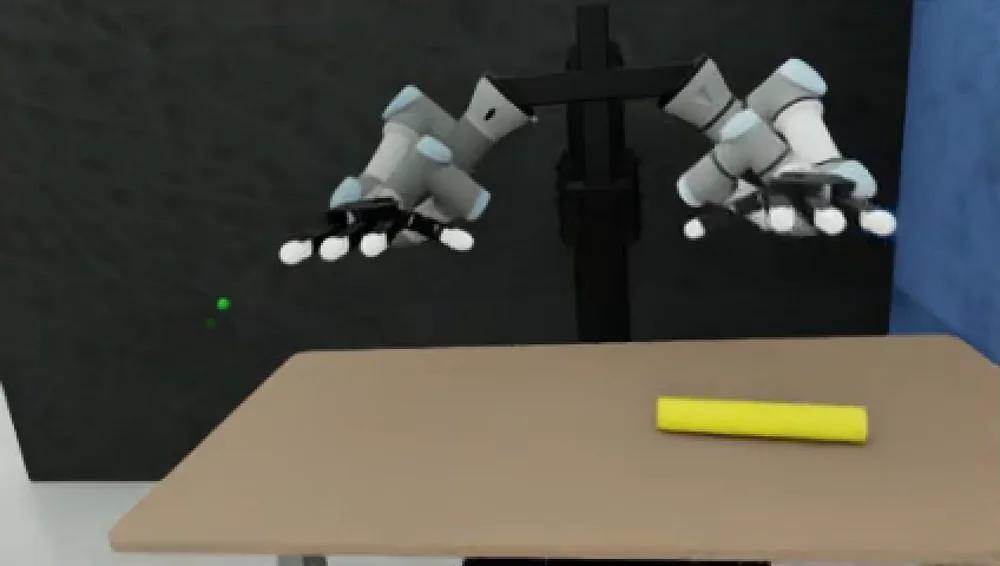
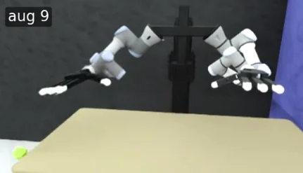
Student copies the teacherStudent가 Teacher를 따라 학습
- Rendered stereo images with color and camera randomization색과 카메라 Randomization을 거친 렌더링 Stereo 영상
- The teacher stays fixed; its actions are the labelsTeacher는 고정, Teacher의 Action이 정답
- Online distillation: control moves from teacher to student as β goes from 1 to 0Online distillation: β가 1에서 0으로 줄며 실행이 Teacher에서 Student로
L = La + λpose Lpose
Deploy only the student실물에는 Student만
- No 6D pose estimator6D pose estimator 없음
- No real-robot training data실물 학습 데이터 없음
- Two RealSense D415, RGB onlyRealSense D415 두 대, RGB만
at = μS(OS,t)
04
Student policyStudent policy 구조
The student keeps the teacher's two-arm structure and adds two things: vision, and a memory of the last 32 steps.Student는 Teacher의 양팔 구조를 그대로 두고 두 가지를 더함: 영상 입력, 최근 32 step의 기억
| Policy inputPolicy 입력 | Teacher | Student |
|---|---|---|
| Object pose물체 자세 | ✓ | ✕ |
| Goal position목표 위치 | ✓ | ✕ |
| Joints and grip관절 값과 그립 | ✓ | ✓ |
| Two RGB images, 424 × 240RGB 영상 두 장, 424 × 240 | ✕ | ✓ |
| History이력 | 1 step | 32 steps |
Two RGB imagesRGB 영상 두 장
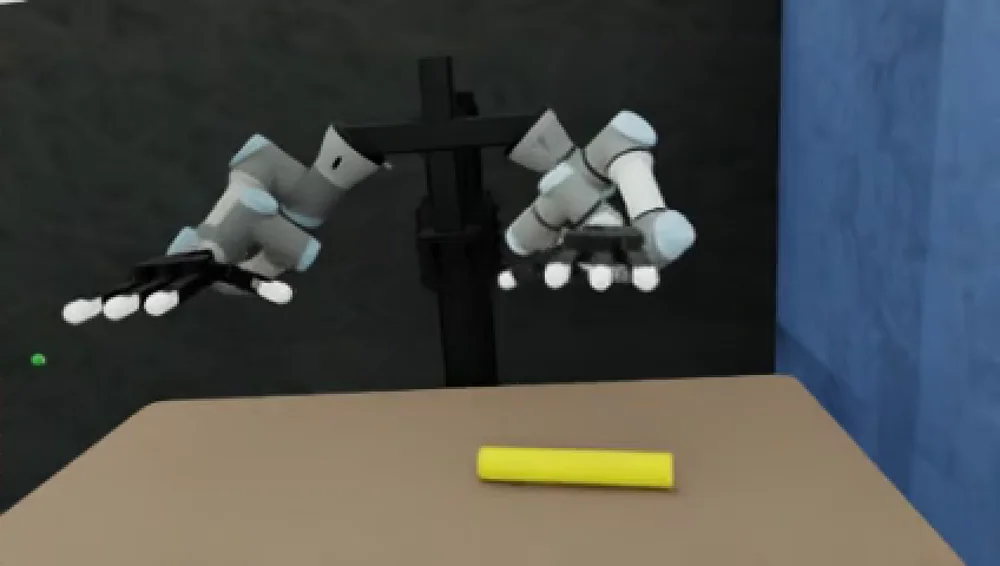
left and right, 424 × 240, plus joints왼쪽, 오른쪽 424 × 240과 관절 값
ResNet-18 encoder
×2, shared, ImageNet pretrained×2 공유, ImageNet 사전학습
Stereo cross-attention
fuses the left and right views왼쪽과 오른쪽 영상 융합
Arm tokens
R [z; qR]
L [z; qL]
Observation encoder
self-attention between the two arms두 팔 사이 Self-attention
Causal temporal transformer
attends to the past 32 steps최근 32 step을 봄
Autoregressive decoder
left arm given the right arm오른팔 Action을 보고 왼팔
14-D action
(μS, σS), 7 per arm(μS, σS), 팔마다 7
- Kept from the teacherTeacher에서 그대로
- Added for vision and history영상과 이력을 위해 추가
At deployment the policy gets no object pose; the object pose head only adds a loss during training.실행할 때 물체 자세 입력은 없음. Object pose head는 학습 때 손실에만 쓰임
05
My part내 담당
01
Teacher trainingTeacher 학습
Trained the Pick-and-Place teacher. When training collapsed, logged KL and action std to trace the cause.Pick-and-Place Teacher 학습. 학습 붕괴 때 KL과 Action std를 추가 기록해 원인 추적
02
Student designStudent 설계
Added stereo vision and the 32-step temporal transformer to the two-arm structure.양팔 구조에 Stereo vision과 32 step Temporal transformer 추가
03
DistillationDistillation 구현
Modified the single-arm DextrAH-RGB public code for two-arm inputs and outputs.단일 팔용 DextrAH-RGB 공개 코드를 양팔 입출력으로 수정
04
Experiments and paper비교 실험과 원고
Ran the Pick-and-Place comparison experiments and wrote the manuscript as first author.Pick-and-Place 비교 실험, 제1저자 원고
06
Results결과
The two students were close in simulation. On the real robot they were far apart.Simulation에서는 비슷했던 두 Student가 실제 로봇에서는 크게 갈림
- Teacher (simulation only)Teacher (Simulation만)
- Baseline student (DextrAH-RGB, ported to two arms)Baseline student (양팔로 이식한 DextrAH-RGB)
- TMAD student (ours)
Simulation 5 runs × 100 trials
Real robot 3 runs × 25 trials, zero-shot
TMAD minus baseline, ppTMAD와 Baseline의 차이, %p
Pick-and-Place
Simulation+3.0
Real robot+44.0
Handover
Simulation+8.6
Real robot+60.0
Mean success rate (%), from Table I of the paper. Kept the same for both students: teacher, inputs, vision encoder, action space, randomization and training length. The teacher needs object states from the simulator, so it does not run on the real robot.평균 성공률(%), 원고 Table I. 두 Student에 같게 둔 조건: Teacher, 입력, Vision encoder, Action space, Randomization, 학습 길이. Teacher는 Simulator의 물체 상태가 필요해 실물에서는 실행하지 않음
Pick-and-Place, per subgoalPick-and-Place, Subgoal별
Handover, per subgoalHandover, Subgoal별
- TMAD student
- Baseline student
Real robot, success rate (%) at each subgoal. A separate 25-trial evaluation per task (paper Fig. 5).실물, Subgoal별 성공률(%). 작업마다 별도 25 trials(원고 Fig. 5)
07
On the real robot실제 로봇
Pick-and-Place third-person video, 35 s3인칭 원본 영상 35초
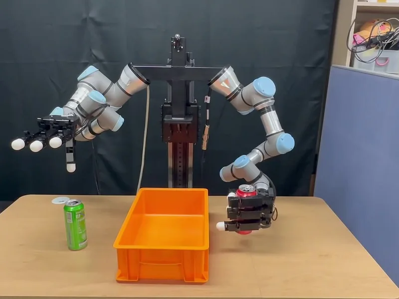
0:17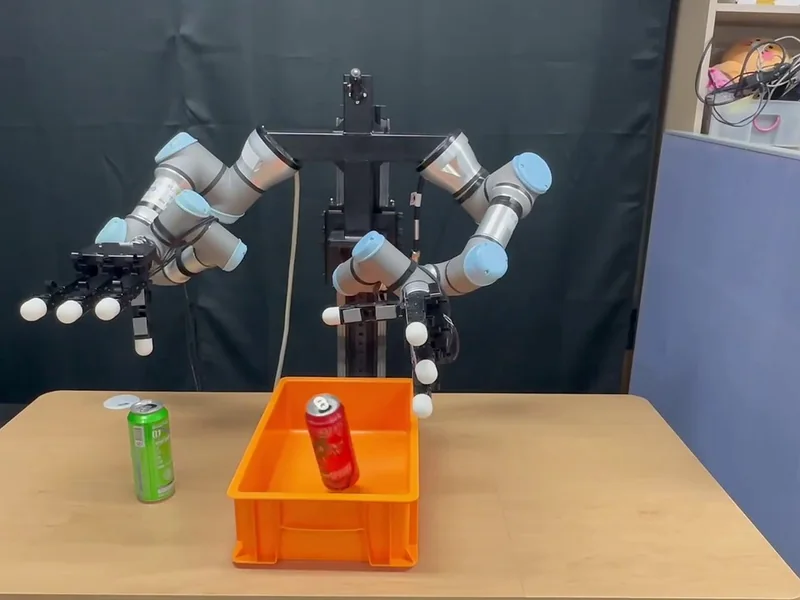
0:22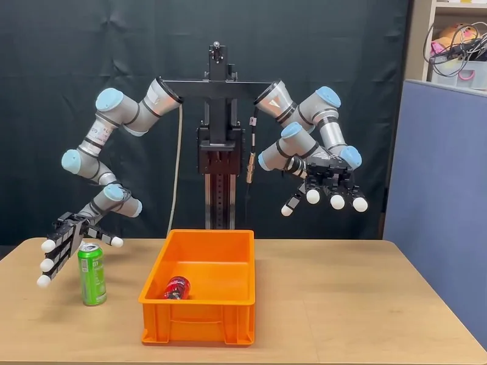
0:28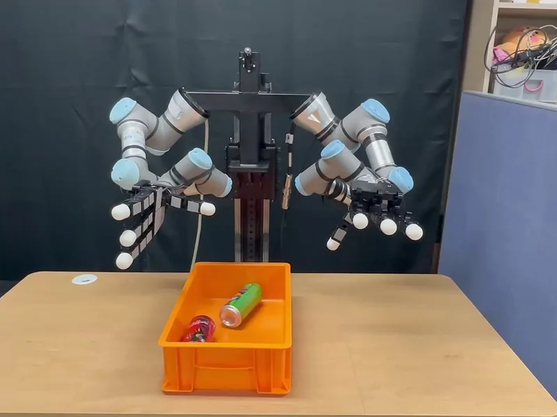
0:35Handover robot camera, 17 s로봇 카메라 원본 17초
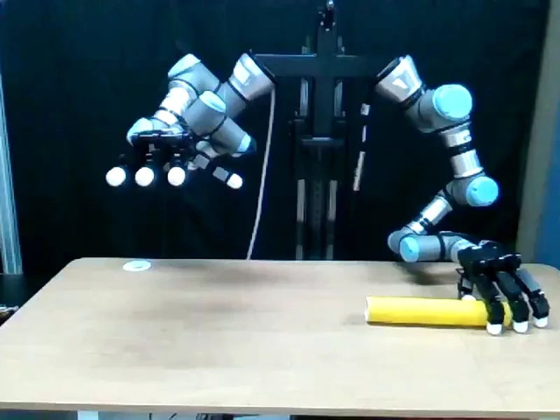
0:04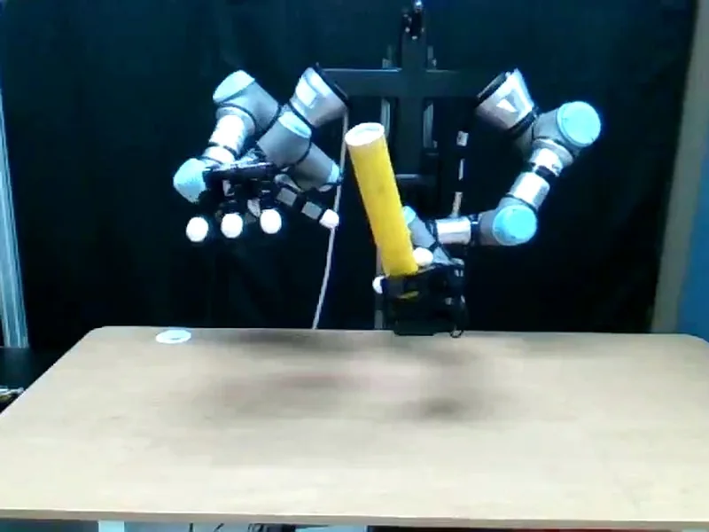
0:08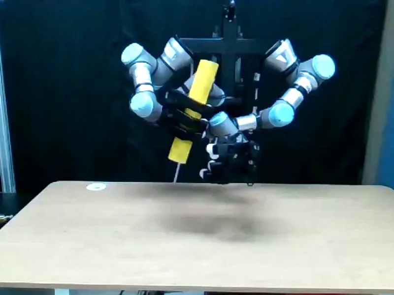
0:12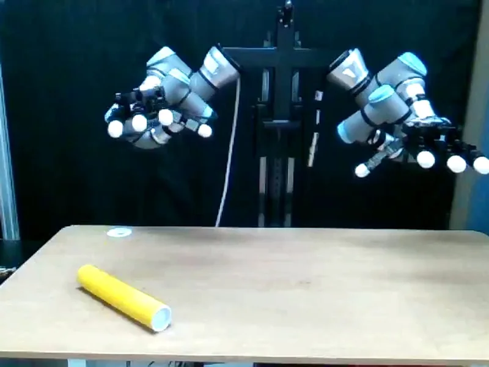
0:17One successful trial each, from start to finish. Times are positions in the original video.성공 시행 하나를 처음부터 끝까지. 시각은 원본 영상 기준
08
Problem solving: the first real-robot run문제 해결: 첫 실물 실행
Symptom현상
The student barely moved the first time it ran on the real robot.처음 실물에 올린 Student가 거의 움직이지 않음
Analysis분석
Compared real and simulated images and inputs, then reproduced the same symptom in a simulation with added noise.실물과 Simulation의 영상, 입력값을 비교하고 Noise를 넣은 Simulation에서 같은 증상 재현
Fix조치
Physics randomization for the teacher, image color and camera pose randomization for the student, then retraining.Teacher에 Physics randomization, Student에 영상 색과 카메라 위치 Randomization을 더해 재학습
Result결과
With changes made only in simulation, the policy started working on the real robot.실물 데이터 없이 Simulation만 고쳐 실물에서 Policy가 동작하기 시작
09
Follow-up: all 16 finger joints후속 연구: 손가락 16관절 직접 제어
In the paper, each Allegro hand moved with one grip command. In the follow-up, the policy sets all 16 finger joints of each hand directly and predicts four steps of actions per query.논문에서는 Allegro 손이 그립 명령 하나로 움직였음. 후속 연구에서는 Policy가 손마다 16관절을 모두 직접 정하고, 한 번의 추론으로 4 step의 Action을 예측
Paper논문
7-Dper arm: 6 arm joints + 1 grip command팔마다: 팔 관절 6 + 그립 명령 1Follow-up후속
22-Dper arm: 6 arm + 16 finger joints, 4-step action chunk팔마다: 팔 6 + 손가락 16관절, 4 step Action chunkSimulation, Pick-and-PlaceSimulation, Pick-and-Place
94.7%student, 142 / 150 (teacher 99.3%, 993 / 1,000)Student, 142 / 150 (Teacher 99.3%, 993 / 1,000)Click to enlarge눌러서 크게 보기
Follow-up structure: (a) teacher with six entity tokens, (b) stereo RGB student with object tokens from color heatmaps, (c) shared bimanual policy.후속 구조: (a) 6개 Entity token Teacher (b) 색 Heatmap에서 Object token을 만드는 Stereo RGB Student (c) 공유 양팔 Policy
10
Detailed figures상세 그림
Click to enlarge눌러서 크게 보기
Pipeline, in the style of the paper figure학습 파이프라인, 논문 그림 양식
Click to enlarge눌러서 크게 보기
Student policy, with the real-robot input at deploymentStudent policy 구조와 실물 실행 입력